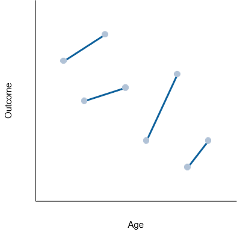
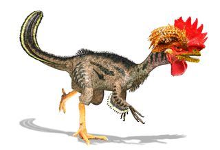
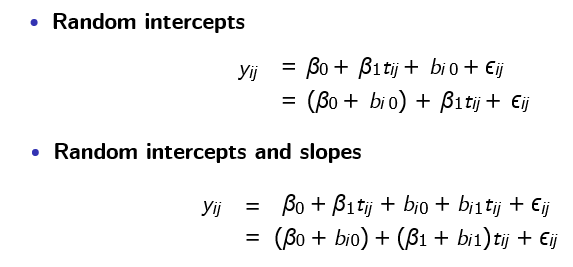

Time tRavelling: Introduction to Longitudinal models in R
Longitudinal studies
Record incident events
Ascertain exposure prospectively Identify time effects: cohort, period, age
Summarize changes over time within individuals
Offer attractive efficiency gains over cross-sectional studies
Help establish causal effect of exposure on outcome

Time is of essence
Help establish causal effect of exposure on outcome
Cross-sectional study
- Egg → Chicken Chicken → Egg
Longitudinal study
- Bacterium → Dinosaur → Chicken

Challenges
Account for incomplete participant follow-up
Determine causality when covariates vary over time
Choose exposure lag when covariates vary over time
Require specialized methods that account for longitudinal correlation
Analytic approach
Must account for correlation due to repeated measurements over time
Failure to account for correlation ⇒ incorrect standard estimates, resulting in incorrect confidence intervals and hypothesis tests
Analytic approaches
Approaches: Include all observed data in a regression model for the mean response and account for longitudinal correlation
Generalized estimating equations (GEE): A marginal model for the mean response and a model for longitudinal correlation
Generalized linear mixed-effects models (GLMM): A conditional model for the mean response given subject-specific random effects, which induce a (possibly hierarchical) correlation structure
Generalised estimating equations
Contrast average outcome values across populations of individuals defined by covariate values, while accounting for correlation
Focus on a generalized linear model with regression parameters β, which characterize the systemic variation in Y across covariates X
- Longitudinal correlation structure is a nuisance feature of the data (Liang and Zeger, 1986)
Generalised estimating equations
Mean model
Primary focus of the analysis
Assumptions
Observations are independent across subjects
Observations may be correlated within subjects
Characterizes a marginal mean regression model
- µij does not condition on anything other than xij
Generalised estimating equations
Covariance model
Longitudinal correlation is a nuisance; secondary to mean model of interest
Assume a form for variance that may depend on µij
Select a model for longitudinal correlation with parameters α
Correlation models
Correlation between any two observations on the same subject.
Independence: is assumed to be zero
- Always appropriate with use of robust variance estimator (large n)
Exchangeable: is assumed to be constant
- More appropriate for clustered data
Auto-regressive: is assumed to depend on time or distance
- More appropriate for equally-spaced longitudinal data
Unstructured: is assumed to be distinct for each pair )
- Only appropriate for short series (small m) on many subjects (large n)
Semi-parametric
Specification of a mean model and correlation model does not identify a complete probability model for the outcomes
The [mean, correlation] model is semi-parametric because it only specifies the first two moments of the outcomes
We estimate β and generate valid statistical inference, while accounting for correlation by constructing an unbiased estimating function
This is also known as the sandwich, robust, or Huber-White variance estimator
Requires sufficiently large sample size (n ≥ 40)
Requires sufficiently large sample size relative to cluster size (n m)
GEE in a Box
Primary focus of the analysis is a marginal mean regression model that corresponds to any GLM
Longitudinal correlation is secondary to the mean model of interest and is treated as a nuisance feature of the data
Requires selection of a ‘working’ correlation model
Lack of a likelihood function implies that likelihood ratio test statistics are unavailable; hypothesis testing with GEE uses Wald statistics
Working correlation model does not need to be correctly specified to obtain a consistent estimator for β or valid standard errors for β, but efficiency gains are possible if the correlation model is correct
Issues
Accommodates only one source of correlation: Longitudinal or cluster
GEE requires that any missing data are missing completely at random
Issues arise with time-dependent exposures and covariance weighting
Mixed-effects models
Contrast outcomes both within and between individuals
Assume that each subject has a regression model characterized by subject-specific parameters; a combination of
Fixed-effects parameters common to all individuals in the population
Random-effects parameters unique to each individual subject
Although covariates allow for differences across subjects, typically cannot measure all factors that give rise to subject-specific variation
Subject-specific random effects induce a correlation structure (Laird and Ware, 1982)
Characterisation
Types of random effects

Types of random effects

Assumptions
Valid inference from a linear mixed-effects model relies on
Mean model: As with any regression model for an average outcome, need to correctly specify the functional form of xijβ (here also zij bi )
Included important covariates in the model
Correctly specified any transformations or interactions
Covariance model: Correct covariance model (random-effects specification) is required for correct standard error estimates for β
Normality: Normality of ϵij and bi is required for normal likelihood function to be the correct likelihood function for yij
n sufficiently large for asymptotic inference to be valid
GLMM in a Box
Mixed-effects models assume that each subject has a regression model characterized by subject-specific parameters; a combination of
Fixed-effects parameters common to all individuals in the population
Random-effects parameters unique to each individual subject
Estimation and inference can focus both on average outcome levels and trends, and on heterogeneity across subjects in levels and trends
Subject-specific random effects induce a correlation structure
Parametric likelihood approach permits use of likelihood ratio test, but requires several assumptions that must be verified in practice
Issues
Interpretation depends on outcomes and random-effects specification
GLMM requires that any missing data are missing at random
Issues arise with time-dependent exposures and covariance weighting
GEE vs GLMM
Model Purpose
GEE: Focuses on the average population response. Good for estimating average effects in the population.
GLMM: Describes both the average population response and subject-specific deviations. Useful for both population-level and subject-specific effects.
Correlation Handling
GEE: Accounts for correlations between repeated measurements but doesn’t model them explicitly. Uses a working correlation matrix.
GLMM: Models the correlation using random effects, considering the variance and covariance structure.
GEE vs GLMM
Estimation
GEE: Uses quasi-likelihood estimation. Robust against incorrect specification of within-subject correlation.
GLMM: Uses maximum likelihood (or its variants) for fixed and random effects.
Interpretation
GEE: Provides insights about average population effects.
GLMM: Insights on both population average effects and individual variations.
GEE vs GLMM
Assumptions
GEE: More flexible regarding response variable distribution. Fewer assumptions on random effects.
GLMM: Assumes random effects follow a distribution, typically normal.